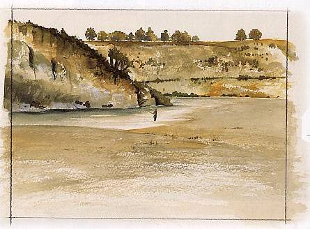
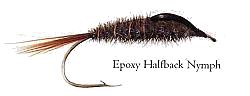
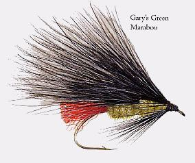
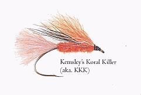
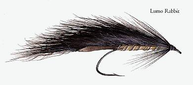
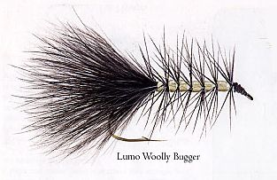
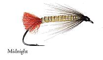
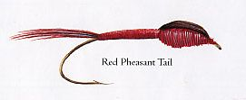
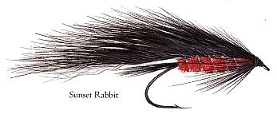

ティップス
６月 GARY KEMSLEY 氏 TUTAEKURI 川

TUTAEKURI 川

Epoxy Halfback Nymph

Gary's Green Marabou

Kemsley's Koral Killer (aka. KKK)

Lumo Rabbit

Lumo Wooly Bugger

Midnight

Red Pheasant Tail

Sunset Rabbit
フライタイヤー GARY KEMSLEY 氏 の紹介
ゲイリー・ケムズリー氏はその生涯のすべてをフライフィッシングに捧げてきた。彼は現時点におけるソルトウォーター・フライフィッシングのニュージーランド及び世界記録の保持者であり、マコ鮫（mako shark）とカウワイ（kahawai）という魚種についての記録を持っている。彼はまた、ワールド・フライフィッシング・チャンピオンシップのニュージーランド代表になったこともあり、タウポやＮＺ国内各地においてフィッシングガイドを勤めた。
ゲイリーは釣りについての本を数冊書いており、ニュージーランドを代表する釣り雑誌への定期的な寄稿者でもある。
これまでに世界中を釣り歩いてきたゲイリーであるが、彼は今でも、ホークスベイ（Hawkes Bay）周辺の川や湖が、トラウトを狙うには最高のフライフィッシングの釣り場だと考えている。
これらの記事・画像の著作権は、Michael Scheele 氏 にあります。無断での転載・二次利用をお断りいたします。
Copyright © 2003-2009 Michael Scheele All Rights Reserved.
NZ釣行に向けてのフライタイイング へ
ティップス 目次へ
サイトマップ
ホームへ
お問い合わせ